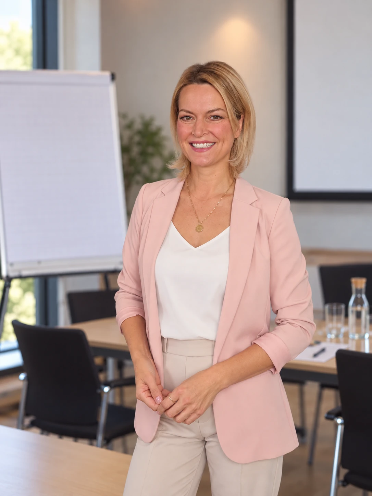

Für Menschen im Kunden- und Gästekontakt
Verbindung
beginnt beim
Verstehen.
Ich unterstütze Teams dabei, Kunden und Gäste emotional zu erreichen – mit bewusster Präsenz, klarer Kommunikation und einem Gespür für Menschen.
Teamtrainings für Verkauf, Service und Events.
Medientraining und persönliches Coaching.
Die Begegnung macht den Unterschied
Ihr Team prägt
das Erlebnis.
Ein Produkt lässt sich online bestellen. Das Gefühl, gesehen, verstanden und willkommen zu sein, entsteht im persönlichen Kontakt.
Genau dort setzen meine Trainings an: bei den Menschen, die Ihr Unternehmen täglich erlebbar machen.
- Verkauf & Handel
- Service & Gastlichkeit
- Messe & Event
Die Trainings
Mehr Sicherheit.
Mehr Verbindung.
Für den direkten Kontakt.
Für einen souveränen Auftritt.
Für Begegnungen, die gelingen.
Kunden & Gäste
emotional erreichenTeamtraining · Verkauf, Service, Messe & Event
Was braucht mein Gegenüber – und wie kann ich darauf eingehen? Wir beschäftigen uns mit dem ersten Eindruck, unbewussten Vorurteilen und den kleinen Signalen, die aus einem kurzen Kontakt eine persönliche Verbindung machen.
Im Mittelpunkt
- Bedürfnisse erkennen und aufmerksam begegnen
- Körpersprache und kleine Gesten bewusst einsetzen
- Ein Kundenerlebnis durch Persönlichkeit mitgestalten
Sichtbar werden.
Bei sich bleiben.Präsenz & Medientraining · Teams und Einzelpersonen
Eine Kamera, ein Mikrofon oder ein Publikum verändert oft das eigene Gefühl. Ich unterstütze Sie dabei, die Scheu abzulegen, sich souveräner zu bewegen und Ihre Persönlichkeit authentisch zu zeigen.
Im Mittelpunkt
- Die eigenen Stärken und die eigene Wirkung erkennen
- Mit Haltung, Körpersprache und Klarheit auftreten
- Charisma entwickeln, ohne sich zu verstellen
Klar bleiben,
wenn es schwierig wird.Teamtraining · Herausfordernde Kunden- und Gästekontakte
Freundlich bleiben und gleichzeitig die eigenen Grenzen wahren: Gerade bei vielen Begegnungen am Tag ist das anspruchsvoll. Gemeinsam betrachten wir, wie Bedürfnisse mit Verhalten zusammenhängen und wie sich Situationen konstruktiv beeinflussen lassen.
Im Mittelpunkt
- Konfliktsituationen verstehen und souverän meistern
- Klar formulieren und mental Abstand gewinnen
- Die eigene Kraft im Kontakt mit anderen erhalten
So individuell wie Ihr Team. Inhalte, Umfang und Rahmen stimmen wir gemeinsam auf Ihre Menschen und ihren Alltag ab.
Auch als persönliches Einzeltraining.
Menschen kaufen nie nur eine Sache. Sie kaufen fast immer ein Gefühl.
Meine Themen
Was Menschen bewegt.
Und miteinander verbindet.
Ein Blick auf die Themen, die meine Arbeit tragen – und die wir passend zu Ihrem Anliegen vertiefen können.
Verstehen.
- Menschliche Bedürfnisse verstehen
- Vorurteile erkennen und auflösen
- Wie wir Menschen emotional erreichen
Wirkung entfalten.
- Die Macht des ersten Eindrucks
- Der bewusste Einsatz von Körpersprache
- Die große Macht der kleinen Gesten
- Charisma lernen und einsetzen
In Verbindung bleiben.
- Verbindung aufbauen in Sekunden
- Konfliktsituationen souverän meistern
- Die eigenen Stärken erkennen und nutzen
- Kraft schöpfen aus Begegnungen

Über mich · Verena Erni
Präsenz erlebt.
Klarheit gelernt.
Menschen im Blick.
25 Jahre als Model. Erfahrung in TV, Medien, Werbung und bei Kundenevents. Und immer wieder die Frage: Was erreicht Menschen wirklich?
In meiner Arbeit habe ich aus nächster Nähe erlebt, wie Aufmerksamkeit entsteht, wie Gesten wirken und wie schnell sich eine Verbindung aufbauen lässt. Dieses praktische Wissen gebe ich heute weiter.
Als Anwältin bringe ich juristische Genauigkeit, klare Sprache und einen sicheren Standpunkt mit. Meine Mediationserfahrung hilft mir, Bedürfnisse hinter einem Verhalten zu verstehen und schwierige Situationen konstruktiv zu begleiten.
Diese Perspektiven fließen in meine Trainings ein: zugewandt im Kontakt, klar im Ausdruck und mit einem Gespür für die eigenen Grenzen.
Lernen wir uns kennenGemeinsam ansetzen
Ihr Alltag.
Unser Ausgangspunkt.
- 01
Einander kennenlernen
Sie erzählen mir von Ihrem Team, typischen Begegnungen und dem, was Sie verändern möchten.
- 02
Die richtigen Themen wählen
Wir besprechen, welche Inhalte und welcher Rahmen zu Ihrem Anliegen passen.
- 03
Bewusster in Kontakt gehen
Im Mittelpunkt steht, was Ihre Menschen im Umgang mit Kunden, Gästen oder Publikum weiterbringt.
Der erste Schritt ist ein Gespräch
Was möchten
Sie bewegen?
Sie möchten Ihr Team stärken oder selbst sicherer auftreten? Erzählen Sie mir von Ihrem Anliegen.
verena.erni@gmx.deTeamtrainings · Medientraining · Einzeltraining